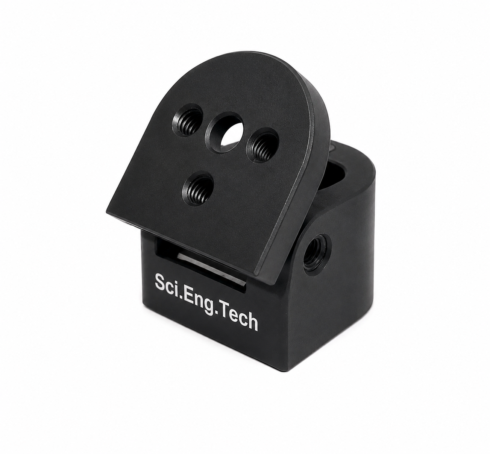
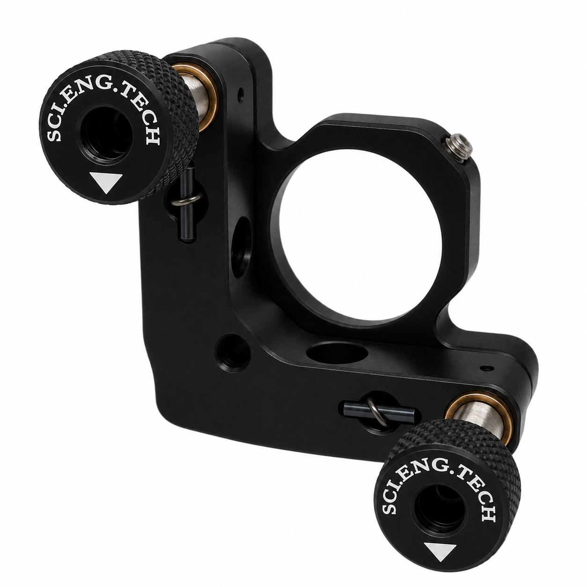
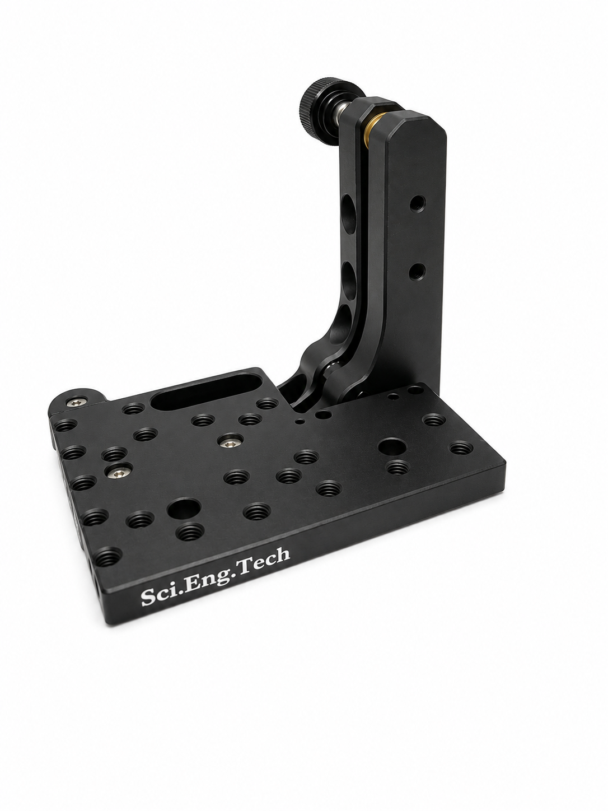
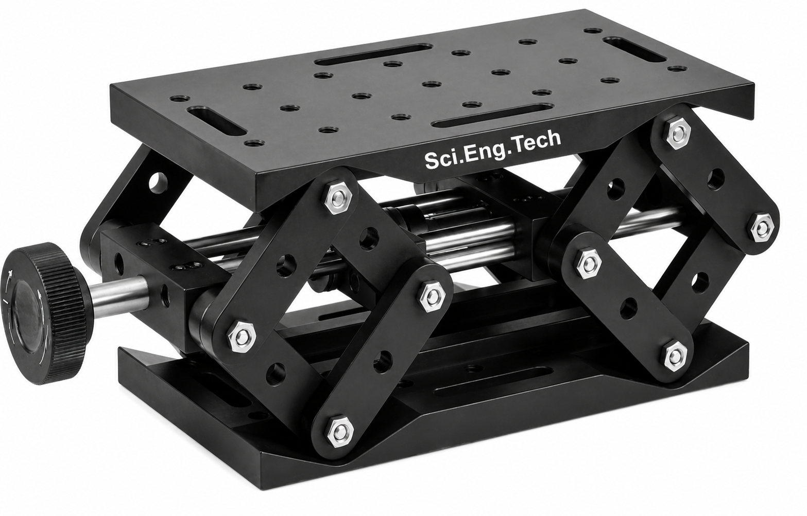
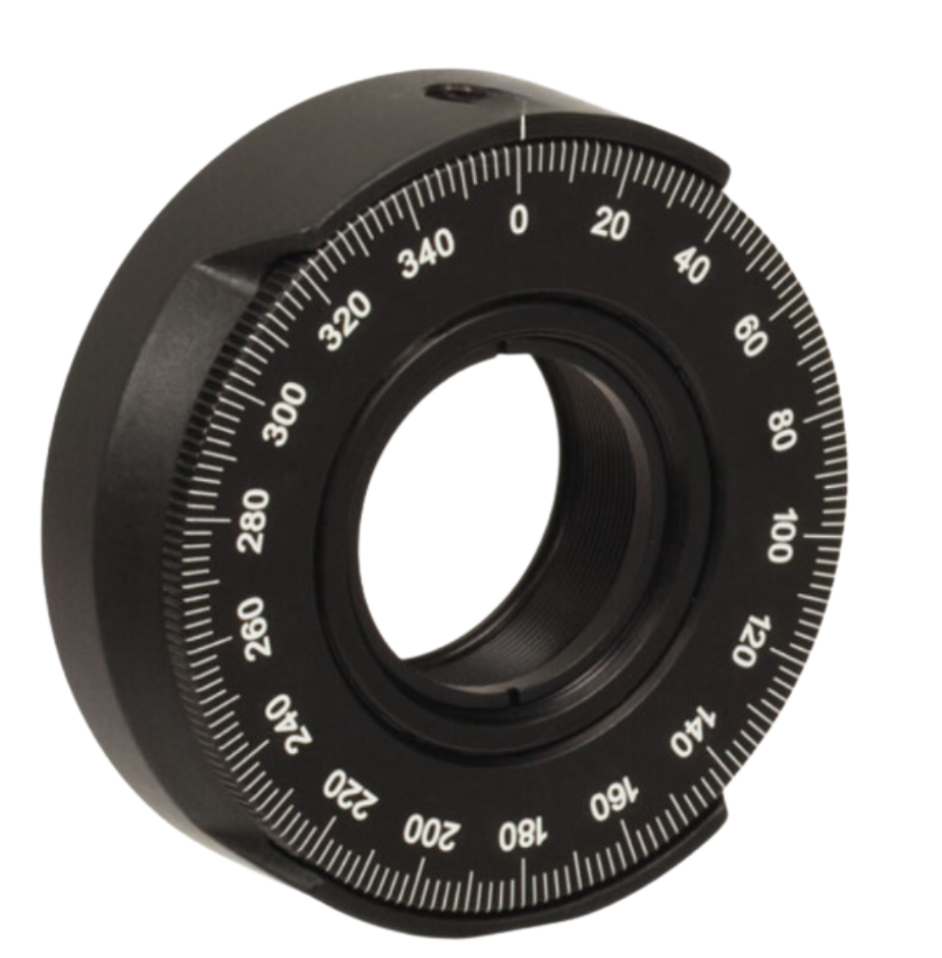

Motion and Positioning
8 spec-verified components from the SciEngTech technical catalog. Request a quote for quantities and custom configurations.
Motion and Positioning
Base Mounting Plate for Linear Stage
. The base plate provides additional mounting flexibility while offering extra clearance between the translation stage and the work surface. Counterbored clearance holes align with the tapped holes on SET-TS-BPM
Motion and Positioning
Flip Mount Adapter
Suitable for 20 mm to 25 mm mirror mounts · Precision angular adjustment in two axes SET-FMA-090-M
Motion and Positioning
Kinematic Mirror Mount
Accommodates Ø25.0 to Ø25.4 mm (1") circular optical elements · Minimum optic thickness: 3 mm SET-KMM-025
Motion and Positioning
Kinematic Platform Mount
Suitable for mounting prisms, beamsplitters, waveplates, sensors, crystals, and other optical components · Compatible with both vertical and horizontal mounting configurations SET-KPM-050
Motion and Positioning
Labjack
Compatible with Breadboards and Components · Vertical Travel: 26.5 mm SET-LBJ-26
Motion and Positioning
Linear Stage
Smooth and precise micrometer-driven motion · High-resolution positioning with fine engraved graduations SET-TS-25
Motion and Positioning
Right Angle bracket for Linear Stage
Enables mounting of translation stages in the XZ or XYZ plane Six dowel pin holes ensure precise orthogonality and repeatable alignment Dimensions (L × W × H): 108 mm × 88 mm × 134 mm This component i SET-TS-RAB
Motion and Positioning